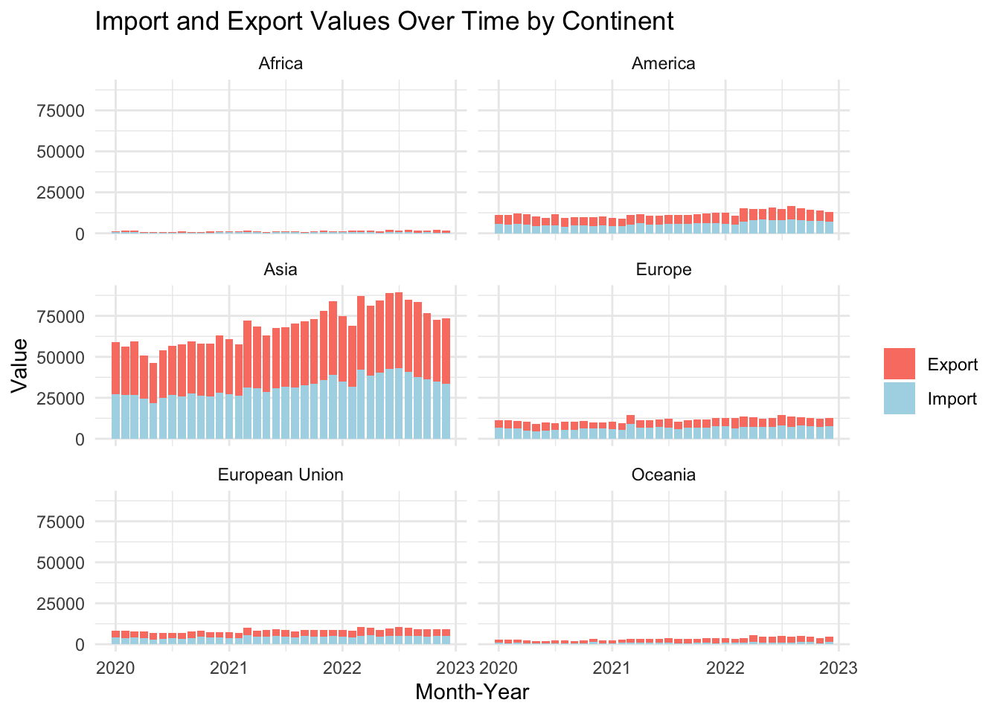
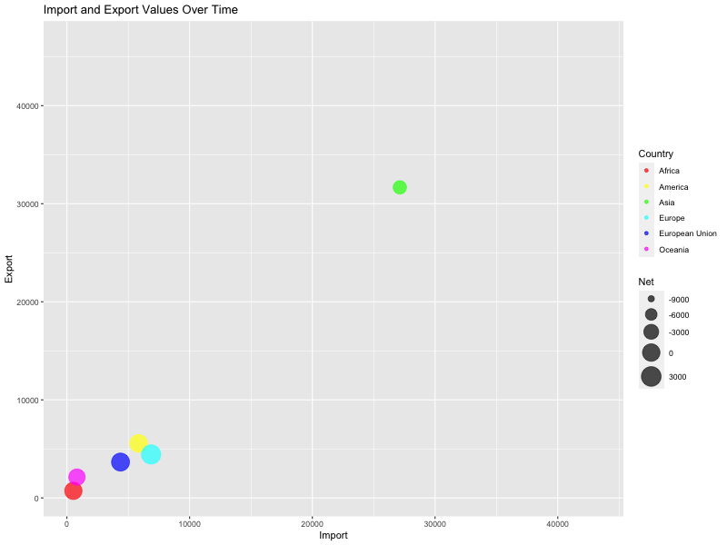

pacman::p_load(scales, viridis, lubridate, ggthemes, gridExtra, tidyverse, readxl, knitr, data.table, readxl, lubridate, stringr, dplyr, gganimate, transformr, patchwork,magick,gifski)Take-Home_Ex04
Getting Started
Load the code chunk to check whether the following packages has been installed.
Load the Data
For the purpose of this Take-home exercise, outputFile.xlsx will be used. This data file consists merchandise import and export by region/market monthly.
import outputFile.xlsx file into R environment and called the data frame as import and export.
import <- read_excel("data/outputFile.xlsx", sheet = "T1", range = "A10:AL129")
export <- read_excel("data/outputFile.xlsx", sheet = "T2", range = "A10:AL101")As there are 2 types of data in the import and output data frame:
Trade by Continent (in Millions)
Trade by Country (in Thousands)
Hence we will create separate data frame for these two types of trade data for separate analysis.
We will filter the data for the relevant time period (January 2020 to December 2022)
For Import Trade by Continents (Million Dollars)
Code
import_continent <- import[1:7, ]%>%
select(`Data Series`, contains(c("2020", "2021", "2022"))) %>%
slice(-1) %>%
set_names(if_else(names(.) == "Data Series", "Country", names(.)))
import_continent$Country <- gsub("\\s*\\(.*?\\)", "", import_continent$Country)For Export Trade by Continents (Million Dollars)
Code
export_continent <- export[1:7, ]%>%
select(`Data Series`, contains(c("2020", "2021", "2022"))) %>%
slice(-1) %>%
set_names(if_else(names(.) == "Data Series", "Country", names(.)))
export_continent$Country <- gsub("\\s*\\(.*?\\)", "", export_continent$Country)For Import Trade by Countries (Thousand Dollars)
Code
import_country <- import[8:119, ]%>%
select(`Data Series`, contains(c("2020", "2021", "2022"))) %>%
slice(-1) %>%
set_names(if_else(names(.) == "Data Series", "Country", names(.)))
import_country$Country <- gsub("\\s*\\(.*?\\)", "", import_country$Country)For Export Trade Countries (Thousand Dollars)
Code
export_country <- export[8:91, ]%>%
select(`Data Series`, contains(c("2020", "2021", "2022"))) %>%
slice(-1) %>%
set_names(if_else(names(.) == "Data Series", "Country", names(.)))
export_country$Country <- gsub("\\s*\\(.*?\\)", "", export_country$Country)Clean and transform data
Dataset Pivot
#Continent Data
continent_i <- reshape2::melt(import_continent, id.vars = "Country",
variable.name = "Month-Year", value.name = "Value",
na.rm = TRUE)
continent_i$`Month-Year` <- as.Date(paste(continent_i$`Month-Year`, "01"), format = "%Y %b %d")
continent_e <- reshape2::melt(export_continent, id.vars = "Country",
variable.name = "Month-Year", value.name = "Value",
na.rm = TRUE)
continent_e$`Month-Year` <- as.Date(paste(continent_e$`Month-Year`, "01"), format = "%Y %b %d")
#Country Data
country_i <- reshape2::melt(import_country, id.vars = "Country",
variable.name = "Month-Year", value.name = "Value",
na.rm = TRUE)
country_i$`Month-Year` <- as.Date(paste(country_i$`Month-Year`, "01"), format = "%Y %b %d")
country_e <- reshape2::melt(export_country, id.vars = "Country",
variable.name = "Month-Year", value.name = "Value",
na.rm = TRUE)
country_e$`Month-Year` <- as.Date(paste(country_e$`Month-Year`, "01"), format = "%Y %b %d")Merge Data Frame
#For Continent Data
continent_trade <- merge(x=continent_i , y=continent_e, by= c("Country", "Month-Year"), all.x = TRUE, all.y = TRUE)
continent_trade <- continent_trade%>%
rename(Import = Value.x, Export = Value.y) %>%
mutate(Net = Import - Export)
#For Country Data
country_trade <- merge(x=country_i , y=country_e, by= c("Country", "Month-Year"), na.rm = TRUE)
country_trade <- country_trade%>%
rename(Import = Value.x, Export = Value.y) %>%
mutate(Net = Import - Export)Plot a stacked bar graph to visualize trade by continent
# Reshape data from wide to long format
continent_trade_long <- continent_trade %>%
pivot_longer(cols = c("Import", "Export"), names_to = "variable", values_to = "value")
# Plot stacked bar chart
ggplot(continent_trade_long, aes(x = `Month-Year`, y = `value`, fill = variable)) +
geom_col() +
facet_wrap(~ Country, ncol = 2) +
scale_fill_manual(values = c("salmon", "lightblue")) +
labs(title = "Import and Export Values Over Time by Continent",
x = "Month-Year", y = "Value", fill = "") +
theme_minimal()
Plot an animated scatter plot to show import and export values for different countries over time
p <- ggplot(continent_trade, aes(x = Import, y = Export, size = Net, color = Country)) +
geom_point(alpha = 0.7) +
scale_color_manual(values = rainbow(length(unique(continent_trade$Country)))) +
scale_size_continuous(range = c(1, 10)) +
labs(title = "Import and Export Values Over Time",
x = "Import", y = "Export", size = "Net") +
transition_states(`Month-Year`) +
ease_aes('linear')
animate(p, fps = 10, duration = 10, width = 800, height = 600)
Looking into different countries
# Create a function to generate the plot for each country
plot_country <- function(country) {
# Filter the data for the current country
data <- country_trade %>% filter(Country == country)
# Create the plot
p <- ggplot(data, aes(x = `Month-Year`)) +
geom_line(aes(y = Import, color = "Import")) +
geom_line(aes(y = Export, color = "Export")) +
scale_color_manual(name = "Value",
values = c(Import = "blue", Export = "green")) +
labs(title = country,
x = "Month-Year",
y = "Value") +
transition_time(`Month-Year`) +
ease_aes('linear')
# Return the plot
return(p)
}
# Create a list of plots for each country
plot_list <- lapply(unique(country_trade$Country), plot_country)
# Combine the list of plots into one animation
animation <- plot_list[[1]]
for (i in 2:length(plot_list)) {
animation <- animation + plot_list[[i]]
}
animation <- animation +
transition_reveal(Month.Year) +
labs(title = "Country: {closest_state}",
x = "Month-Year",
y = "Value") +
ease_aes('linear')
# Animate the plot and save as a GIF
animate(p, renderer = gifski_renderer(), width = 800, height = 600, fps = 10, duration = 10)# Load the 'magick' package
library(magick)After clean and transform the data, we will create a time series plot for Singapore’s bi-lateral trade using ggplot2 package. We will plot the annual total value of imports and exports for each trading partner. We will rank the counties/ regions by their total trade volume.
We will plot the total value of imports, exports, and trade balance over time of each trading partner to understand if there is a trend.